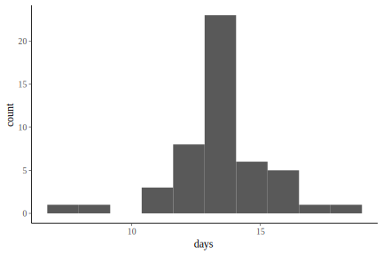
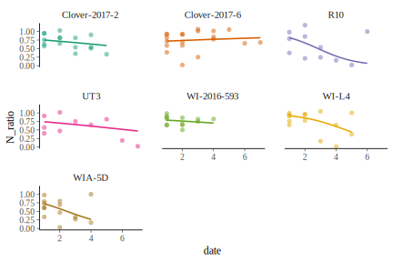

suppressPackageStartupMessages({
library(clonewars)
library(lme4)
})
logit <- function(p) {
suppressWarnings({x <- log(p/(1 - p))})
x <- ifelse(is.nan(x), NA, x)
return(x)
}
inv_logit <- function(x) {
p <- 1 / (1 + exp(-x))
p <- ifelse(is.na(p) & !is.na(x), 1, p)
return(p)
}Looking at when the max is reached
until_max <-
load_data(impute_fxn = impute, filter_pars = NULL) %>%
mutate(line = paste(line)) %>%
bind_rows(clonewars:::load_pz_data(impute_fxn = impute, filter_pars = NULL)) %>%
mutate_at(vars(line, rep), funs(factor)) %>%
# Now filter out early part of each time series, before N > 6
# N <= 6 is when the stochasticity associated with only starting with 2 adults
# appears to be strongest
# Also filter out until the max is reached, then summarize to see how many days
# from N <= 6 to the max N
group_by(line, rep) %>%
filter(1:n() >= which(N > 6)[1],
1:n() <= which(N == max(N))[1]) %>%
mutate(date = date - min(date)) %>%
summarize(days = max(date)) %>%
ungroup()
until_max %>%
ggplot(aes(line, days, color = line)) +
scale_color_brewer(palette = "Dark2", guide = FALSE) +
geom_point()

Looking at mortality after max is reached
after_max <- load_data(filter_pars = NULL, impute_fxn = impute) %>%
mutate(rep = factor(rep)) %>%
group_by(line, rep) %>%
filter(1:n() >= which(N == max(N))[1]) %>%
mutate(N_ratio = N / lag(N),
date = date - min(date),
N_ratio_ = N / N[1],
N_dead = lag(N) - N) %>%
ungroup() %>%
filter(!is.na(N_ratio))Exploring data (not evaluated):
after_max %>%
ggplot(aes(date, N_ratio)) +
geom_line(aes(color = rep)) +
scale_color_brewer(palette = "Dark2", guide = FALSE) +
facet_wrap(~ line, nrow = 2) +
NULL
after_max %>%
filter(N_ratio < 1) %>%
ggplot(aes(date, logit(N_ratio))) +
# ggplot(aes(date, N_ratio_)) +
# geom_point(aes(color = line)) +
geom_line(aes(color = line, linetype = rep), alpha = 0.5) +
stat_summary(fun.y = mean, geom = "point", size = 4, shape = 1) +
stat_smooth(method = "lm", se = FALSE) +
scale_color_brewer(palette = "Dark2", guide = FALSE) +
scale_linetype_manual(guide = FALSE, values = 1:7) +
NULL
after_max %>%
ggplot(aes(date, N_ratio_)) +
geom_line(aes(color = line, linetype = rep), alpha = 0.5) +
stat_summary(fun.y = mean, geom = "point", size = 4, shape = 1) +
stat_smooth(method = "lm", se = FALSE) +
scale_color_brewer(palette = "Dark2", guide = FALSE) +
scale_linetype_manual(guide = FALSE, values = 1:7) +
NULL
after_max %>%
ggplot(aes(N_ratio, color = line)) +
geom_freqpoly(bins = 10, size = 0.75) +
scale_color_brewer(palette = "Dark2", guide = FALSE) +
facet_wrap(~ line, ncol = 2) +
NULL# AIC is lower than for other combos of date and line
after_max_mod <- after_max %>%
# # Removing rows with negative numbers dead.
# filter(N_dead >= 0) %>%
# Rounding values of N and N_dead when N was imputed:
mutate_at(vars(N, N_dead), round) %>%
# Adjusting any negative N_dead numbers by making N_dead 0 and adding whatever
# negative amount was in N_dead to N
mutate(N = ifelse(N_dead < 1, N - N_dead, N),
N_dead = ifelse(N_dead < 1, 0, N_dead)) %>%
{glmer(cbind(N, N_dead) ~ date + (date | line), family = "binomial", data = .)}
after_max_mod %>%
summary()
#> Generalized linear mixed model fit by maximum likelihood (Laplace
#> Approximation) [glmerMod]
#> Family: binomial ( logit )
#> Formula: cbind(N, N_dead) ~ date + (date | line)
#> Data: .
#>
#> AIC BIC logLik deviance df.resid
#> 9824.4 9837.3 -4907.2 9814.4 93
#>
#> Scaled residuals:
#> Min 1Q Median 3Q Max
#> -26.1127 -6.6706 0.2098 6.4840 18.2613
#>
#> Random effects:
#> Groups Name Variance Std.Dev. Corr
#> line (Intercept) 0.5001 0.7072
#> date 0.1012 0.3181 -0.82
#> Number of obs: 98, groups: line, 7
#>
#> Fixed effects:
#> Estimate Std. Error z value Pr(>|z|)
#> (Intercept) 1.6965 0.2686 6.317 2.66e-10 ***
#> date -0.3690 0.1208 -3.056 0.00225 **
#> ---
#> Signif. codes: 0 '***' 0.001 '**' 0.01 '*' 0.05 '.' 0.1 ' ' 1
#>
#> Correlation of Fixed Effects:
#> (Intr)
#> date -0.817
after_max %>%
group_by(line) %>%
summarize(date = list(seq(min(date), max(date), length.out = 100))) %>%
ungroup() %>%
unnest() %>%
mutate(N_ratio = predict(after_max_mod, type = "response", newdata = .)) %>%
ggplot(aes(date, N_ratio, color = line)) +
geom_point(data = after_max, alpha = 0.5, shape = 16) +
geom_line(size = 0.75) +
facet_wrap(~ line) +
scale_color_brewer(palette = "Dark2", guide = FALSE)
# Each line's coefficients, with an added row for WI-L4Ø that's just the mean:
after_max_coefs <- after_max_mod %>%
ranef() %>%
.[["line"]] %>%
`+`(
after_max_mod %>%
fixef() %>%
rep(each = after_max_mod@flist %>% .[["line"]] %>%
levels() %>% length()) %>%
matrix(ncol = after_max_mod@cnms %>% .[["line"]] %>%
length())
) %>%
set_names(c("inter", "date")) %>%
rownames_to_column("line") %>%
add_row(line = "WI-L4Ø", inter = mean(.$inter), date = mean(.$date)) %>%
# Ordering the same as all other data frames:
mutate(line = factor(line, levels = levels(until_max$line))) %>%
arrange(line)
after_max_coefs %>%
knitr::kable()| line | inter | date |
|---|---|---|
| Clover-2017-2 | 1.2860131 | -0.1848006 |
| Clover-2017-6 | 0.8489053 | 0.0927634 |
| R10 | 2.3289371 | -0.8182520 |
| UT3 | 1.2413170 | -0.1945460 |
| WI-2016-593 | 1.4565130 | -0.1499511 |
| WI-L4 | 3.0773514 | -0.6640818 |
| WI-L4Ø | 1.6958105 | -0.3687932 |
| WIA-5D | 1.6316363 | -0.6626848 |
plant_death <- list(
until_max_summ = as.data.frame(until_max_summ),
after_max_mort_coefs = after_max_coefs
)
plant_death
#> $until_max_summ
#> max_mean max_sd
#> 1 13.38776 1.945254
#>
#> $after_max_mort_coefs
#> line inter date
#> 1 Clover-2017-2 1.2860131 -0.18480059
#> 2 Clover-2017-6 0.8489053 0.09276345
#> 3 R10 2.3289371 -0.81825196
#> 4 UT3 1.2413170 -0.19454599
#> 5 WI-2016-593 1.4565130 -0.14995110
#> 6 WI-L4 3.0773514 -0.66408177
#> 7 WI-L4Ø 1.6958105 -0.36879325
#> 8 WIA-5D 1.6316363 -0.66268476